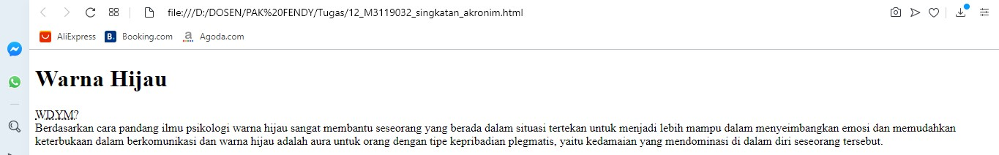

Singkatan
Pada halaman suatu website pasti memiliki testimonial dan penulis maka kita bisa
menggunakan elemen abbr sebagai salah satu tag mendefinisikan singkatan.
Codingan
<!DOCTYPE html>
<html>
<head>
<title>Singkatan</title>
</head>
<body>
<h1>Warna Hijau</h1>
<p>
<abbr title="What do you mean?"> WDYM?</abbr>
<br/>
Berdasarkan cara pandang ilmu psikologi warna hijau sangat membantu
seseorang yang berada dalam situasi tertekan untuk menjadi lebih mampu
dalam menyeimbangkan emosi dan memudahkan keterbukaan dalam berkomunikasi
dan warna hijau adalah aura untuk orang dengan tipe kepribadian plegmatis,
yaitu kedamaian yang mendominasi di dalam diri seseorang tersebut.
</p>
</body>
</html>
Hasil codingan

Analisis
gambar diatas menunjukan perintah singkatan yaitu pada kalimat What do you mean? disingkat menjadi WDYM?
Back